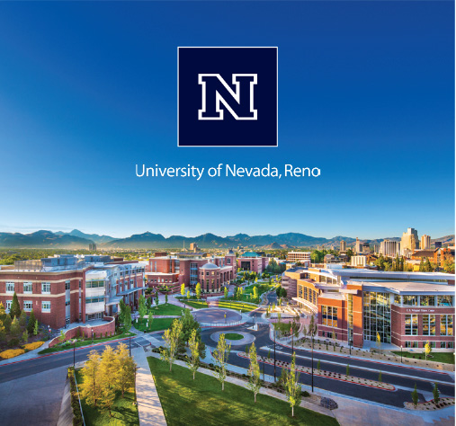

Assistant Professor · University of Nevada, Reno
Learning systems that remain useful when the world changes.
I develop mathematical foundations and practical algorithms for efficient, adaptive, and trustworthy data-driven systems.
01 / News
Spring & Fall 2027
I am recruiting Ph.D. students.
I am looking for highly motivated, curious students with strong mathematical intuition. Interested students should email a CV, a sample publication if available, and a short statement describing their research interests.
Read the application details
02 / About
Data-driven decisions, grounded in rigorous reasoning.
My work connects approximation, estimation, and optimization to build learning systems that are efficient, multimodal, and adaptive. These ideas support applications in autonomous experimentation, manufacturing, human–machine collaboration, and other complex engineering systems.